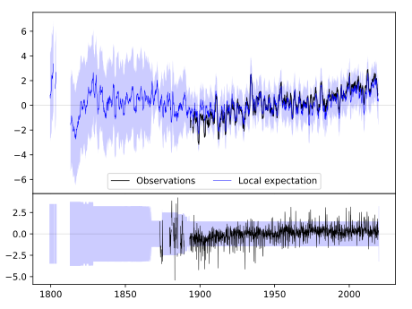
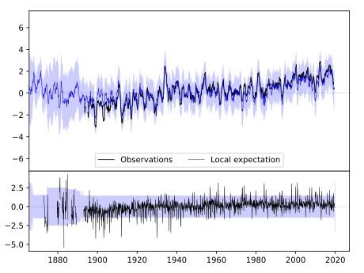
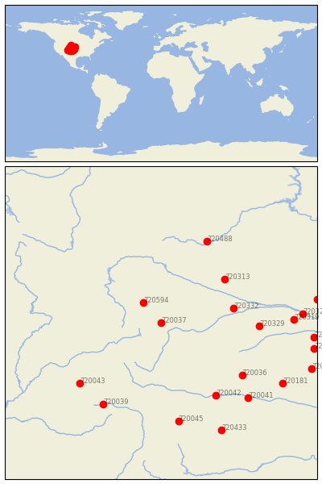

FT COLLINS [USA]


| Neighbour | Name | Country | Distance | Lon/Lat | Years |
|---|
| 720037 | FT COLLINS | USA | 0 | -105.1, 40.6 | 1873-2019 |
| 720594 | LARAMIE RGNL AP | USA | 92 | -105.7, 41.3 | 1866-2019 |
| 720332 | LODGEPOLE | USA | 217 | -102.6, 41.1 | 1893-2019 |
| 720313 | ALLIANCE 1WNW | USA | 248 | -102.9, 42.1 | 1889-2019 |
| 720329 | IMPERIAL | USA | 287 | -101.7, 40.5 | 1890-2019 |
| 720036 | CHEYENNE WELLS | USA | 312 | -102.3, 38.8 | 1889-2019 |
| 720042 | LAS ANIMAS | USA | 322 | -103.2, 38.1 | 1867-2019 |
| 720043 | MONTROSE #2 | USA | 334 | -107.9, 38.5 | 1885-2019 |
| 720488 | HOT SPRINGS | USA | 338 | -103.5, 43.4 | 1893-2019 |
| 720039 | HERMIT 7 ESE | USA | 355 | -107.1, 37.8 | 1893-2019 |
| 720045 | TRINIDAD | USA | 381 | -104.5, 37.2 | 1886-2019 |
| 720041 | HOLLY | USA | 387 | -102.1, 38.0 | 1893-2019 |
| 720319 | CURTIS 3NNE | USA | 388 | -100.5, 40.7 | 1893-2019 |
| 720325 | GOTHENBURG | USA | 414 | -100.2, 40.9 | 1893-2019 |
| 720181 | SCOTT CITY | USA | 429 | -100.9, 38.5 | 1889-2019 |
| 720433 | KENTON | USA | 449 | -103.0, 36.9 | 1893-2019 |
| 720316 | BEAVER CITY | USA | 452 | -99.8, 40.1 | 1890-2019 |
| 720176 | NORTON 9SSE | USA | 461 | -99.8, 39.7 | 1893-2019 |
| 720317 | BROKEN BOW 2 W | USA | 461 | -99.7, 41.4 | 1893-2019 |
| 720183 | WAKEENEY | USA | 478 | -99.9, 39.0 | 1883-2019 |